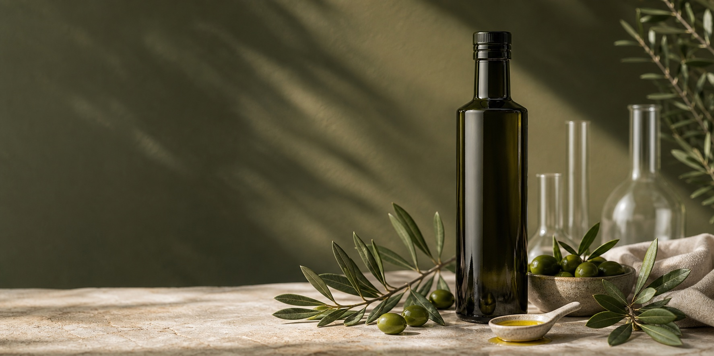

Kald bruk
Brukes alene, over yoghurt, salat eller ferdig mat rett før servering.

Produksjonssikker arbeidsvariant
Høyphenolisk extra virgin olivenolje utviklet for daglig bruk.
Hver batch skal dokumenteres med analysebevis, opprinnelse og fenolprofil før lansering.
Hvorfor OliveX
Extra virgin olivenolje kan variere mye i fenolinnhold. OliveX bygges rundt tidlig høstede oliven, kontrollert produksjon og batchdokumentasjon, slik at kunden kan se hva flasken inneholder før kjøp.
Smak
Den pepperaktige følelsen bakerst i halsen er en naturlig sensorisk egenskap ved mange høyphenoliske oljer. For OliveX forklares sensorikken sammen med batchanalyse, ikke som et løfte om medisinsk effekt.
Analysebevis
Slik brukes den
Brukes alene, over yoghurt, salat eller ferdig mat rett før servering.
Oppbevares mørkt og kjølig.
Endelig anbefalt mengde avklares mot produktdata, næringsinnhold og eventuell EU-påstand.
Vipps, kortbetaling og Posten/Bring publiseres først etter testordre og SSL-verifisering.
FAQ-kandidat
Tidlig høstede oliven gir lavere oljeutbytte, men kan gi en mer konsentrert fenolprofil. Endelig produktforklaring bør knyttes til reell batchanalyse.
Den pepperaktige smaken er en naturlig del av sensorikken i mange intense extra virgin olivenoljer. OliveX forklarer smaken sammen med analysebevis og opprinnelse.
OliveX er utviklet for kald bruk. Bruk den alene eller over kald/ferdig mat.
Vi kan ikke gi medisinske råd. Ved spørsmål om sykdom, medisiner, graviditet eller behandling bør du kontakte lege eller farmasøyt.